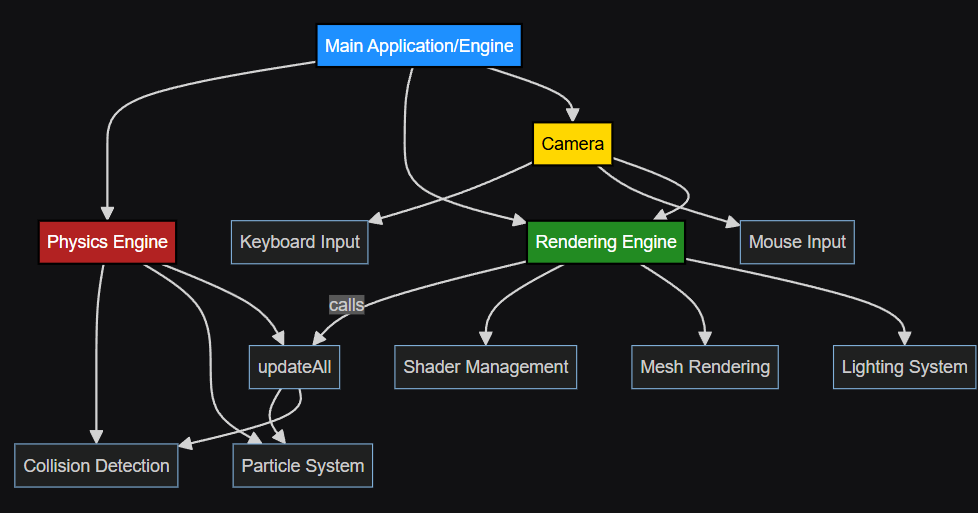
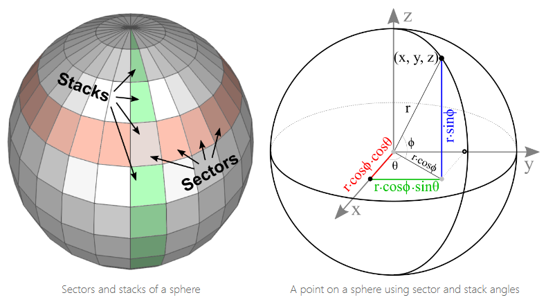
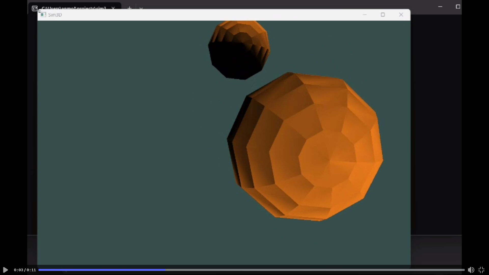
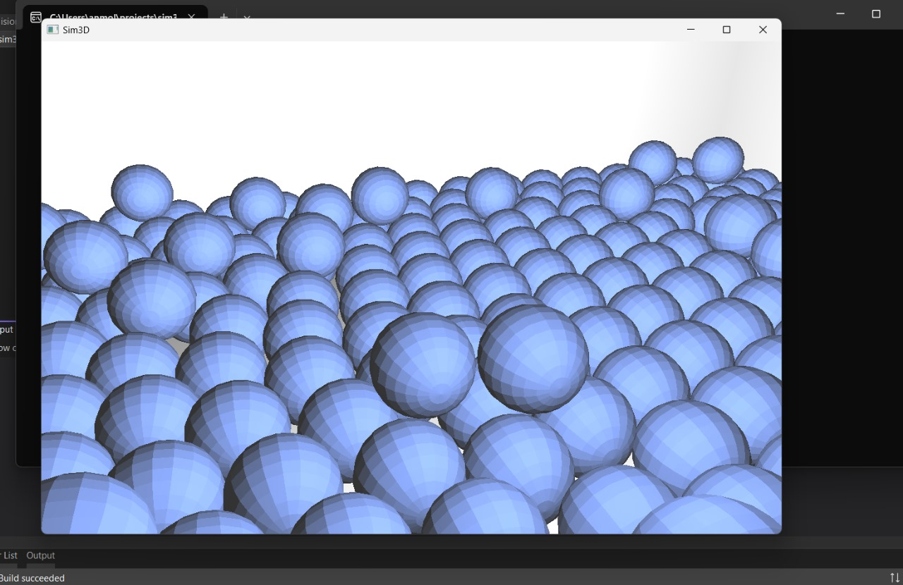

Welcome to the development log for Phase 1 of Sim3D, a 3D particle simulation engine built from scratch using C++ and OpenGL. This devlog chronicles the journey from initial setup to a functioning particle system with basic physics and rendering capabilities.
Sim3D is designed to simulate particles in a 3D environment, allowing for particle collision, movement, and interactive visualization. The project aims to create a robust foundation for more complex simulations in later phases.
As this was my first ever time learning c++, I had to configure Visual Studio for OpenGl, as well as setting up the libraries that would neccessary
Deciding the application design was also important, since a well-planned design keeps everything organize, makes debugging a little less hellish and impementing new features along the way easier.

I learned how to write classes and headers in c++, later assigning everyone to work on different components.
The next phase focused on creating the core physics engine, including:
Key challenges:
bool isCollision(particle& p1, particle& p2)
{
if(&p1 == &p2)
return false;
return dot(p1.pos - p2.pos, p1.pos - p2.pos) <= ((p1.size + p2.size) * (p1.size + p2.size));
Code snippet (Engine update function):
void Engine::updateall() //this is the main function that gets called in infinite loop
{
particles.push_back(particle(glm::vec3(1), 1.0f));
//call particle.update() for every element in array
for (int i = 0; i < particles.size(); i++){
particles[i].update(tconst);
particles[i].velocity += globalAcc;
}
//call collision handling functions after updation
checkCollision(particles);
}
Apparently you can't really render curves in OpenGL, everything needs to defined with vertices. To render particles as spheres, we implemented a sphere mesh generation algorithm:

Key challenges:
Finally working! 
This step involved combining the rendering system with the physics engine:

Click here to see some bouncing ballsThe final step of Phase 1 involved iterative refinement:
Key improvements:
Throughout Phase 1, several challenges were encountered and overcome:
Shader compilation issues
collision logic
[Discuss any performance optimizations or considerations you made during Phase 1]
This was just the Phase-1 of our journey, in the upcoming Devlog, I'll be showcasing these features and improvements
Phase 1 of Sim3D has laid a solid foundation for our 3D particle simulation engine. We've successfully implemented basic rendering, a functional physics engine, and particle interactions
Make sure to checkout the github repo if you want to follow us as we add new features or if you want to try it out yourself.
sim3d/
├── shader/
├── src/
│ ├── include/
│ ├── lib/
│ ├── Engine.cpp
│ ├── Engine.h
│ ├── camera.h
│ ├── collision.cpp
│ ├── collision.h
│ ├── glad.c
│ ├── gui.cpp
│ ├── main.cpp
│ ├── particle.cpp
│ ├── particle.h
│ ├── renderer.cpp
│ ├── renderer.h
│ └── shader.h
I reccomend going through learnopengl.com and Cherno's youtube channel which is a goldmine if you want to learn graphics programming and c++. This was very helpful in setting up the project.
Buffers: Buffers are memory storage locations used to hold data that can be processed by the GPU. Examples include Vertex Buffer Objects (VBOs) and Element Buffer Objects (EBOs). They are used to store vertex data, indices, and other attributes.
Shaders: Shaders are small programs that run on the GPU. They are used to control the rendering pipeline stages. The two most common shaders are the Vertex Shader, which processes each vertex, and the Fragment Shader, which processes each pixel.
Rendering: Rendering is the process of generating an image from a model. In OpenGL, rendering involves setting up the scene, binding the appropriate buffers, using shaders, and issuing draw calls to render the objects on the screen.